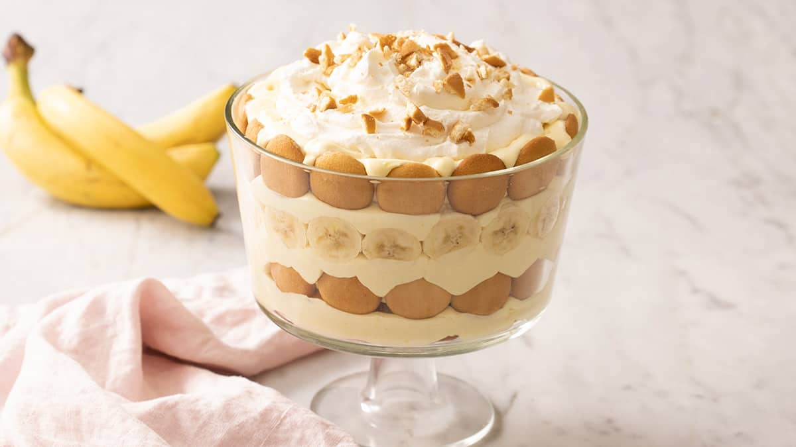

Banana Pudding

This no-cook banana pudding recipe is easy to make and delicious layered
with vanilla wafers and slices of banana. It's the best banana pudding you
will ever find (or so I've been told by many)!
Click here to see the video
:max_bytes(150000):strip_icc():format(webp)/22749-the-best-banana-pudding-mfs-step-1-332-2747fff5d1bb45eb905bc9eb093e7c5b.jpg)
Ingredients
- Milk
- Pudding Mix
- Sweetened Condensed Milk
- Vanilla Extract
- Frozen whipped topping
- Vanilla wafers
- Bananas
Method
- Gather all ingredients.
-
Place milk and pudding mix in a large bowl; beat with a whisk for 2
minutes. Blend in condensed milk until smooth.
- Stir in vanilla, then fold in whipped topping.
-
Layer wafers, banana slices, and pudding mixture in a glass serving
bowl.
- Chill. When ready to serve top with extra crushed wafers.
- Enjoy!